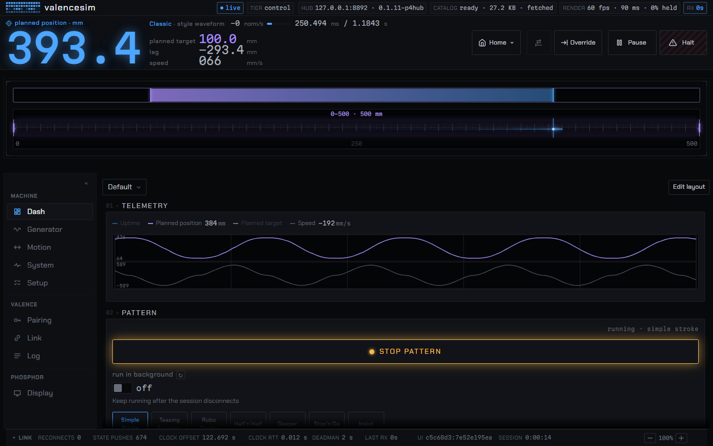

pre-release protocol · spec v1.0-draft
Open hardware and software for linear motion machines.
One hub holds the machine's state. Any number of clients stay in sync with it: the desktop app, a browser tab, a script, a plugin. The board, its firmware, the protocol between them and the client are all here, in the open, under MIT, CC BY 4.0, Apache-2.0 and CERN-OHL-S-2.0.
The client

Phosphor is the reference client. It builds its pages from what the hub declares, so a new setting on the machine shows up in the app without an app update. Plugins draw their own controls over the same protocol. It ships with valencesim, the device twin, so you can drive it with no hardware attached.
Measured
- quadrature edge jitter from the LP core, under one 8 ns scope sample
- 8ns
- edges scoped while the main cores hammered flash; none late, none illegal
- 2,156
- difference between the native, wasm and ESP32-P4 motion plans
- 0ULP
- desktop platforms from one source: Windows, macOS, Linux
- 3
Sources: Nucleus: motion control · Nucleus: architecture · Kinetic: determinism · Phosphor: builds
The parts
| Repo | What it is | License |
|---|---|---|
| Valence | The protocol: spec, registry, reference library, clients, tools, documentation. | MIT · spec text CC BY 4.0 |
| Nucleus | Firmware for the OSSM Flagship board, ESP32-P4 with an ESP32-C6 for Wi-Fi. Pure ESP-IDF; quadrature from the LP core. | Apache-2.0 |
| Phosphor | The client. Windows, macOS, Linux (Flatpak). Plugins, themes, and the device twin built in. | Apache-2.0 |
| Kinetic | The motion engine: trajectory planning, waveform shaping, blend and stretch policies. Header-only C++ on Ruckig. | Apache-2.0 |
| Hardware | The OSSM Flagship board and everything physical around it, in KiCad. | CERN-OHL-S-2.0 |
| Isotope | Accessory firmware for the ESP-NOW network around Nucleus. Design stage. | not yet |
| ButtplugIO | A fork of buttplugio/buttplug carrying the Valence hardware manager, on branch valence. |
BSD-3-Clause |
Where things stand
The firmware homes a real rail, plays scripts, and talks to the client over Wi-Fi, with Bluetooth as the fallback. Phosphor builds for all three desktop platforms from one source. The protocol is pre-release: it changes through RFCs, and the registry is the single source of every wire number. If you want to build a client or a machine, start with the docs; if you want to add a control surface, start with Phosphor's plugin contract.
How it's built
One person designs this and makes every decision; coding agents write most of the code under that direction. The rules they work to are in the repos: a written doctrine, a registry that owns every wire number, lint that fails the build, tests on every change, and a bench where firmware has to move a real motor before it counts as done. That's stated here so nobody has to guess.
Credits
The Advanced pattern generator comes from fray-d's OSSM-Lite and keeps its CERN-OHL-S-2.0 license. The stroke patterns come from theelims' StrokeEngine, and motion planning rides on Ruckig.
Type is Chakra Petch and Martian Mono, both under the SIL Open Font License.